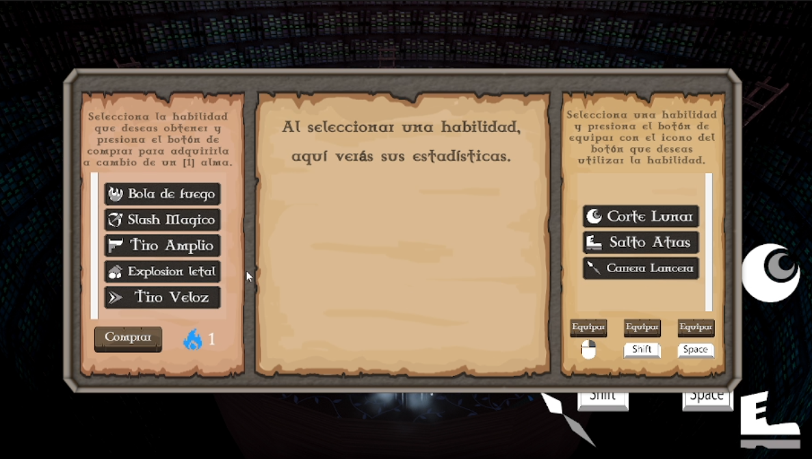
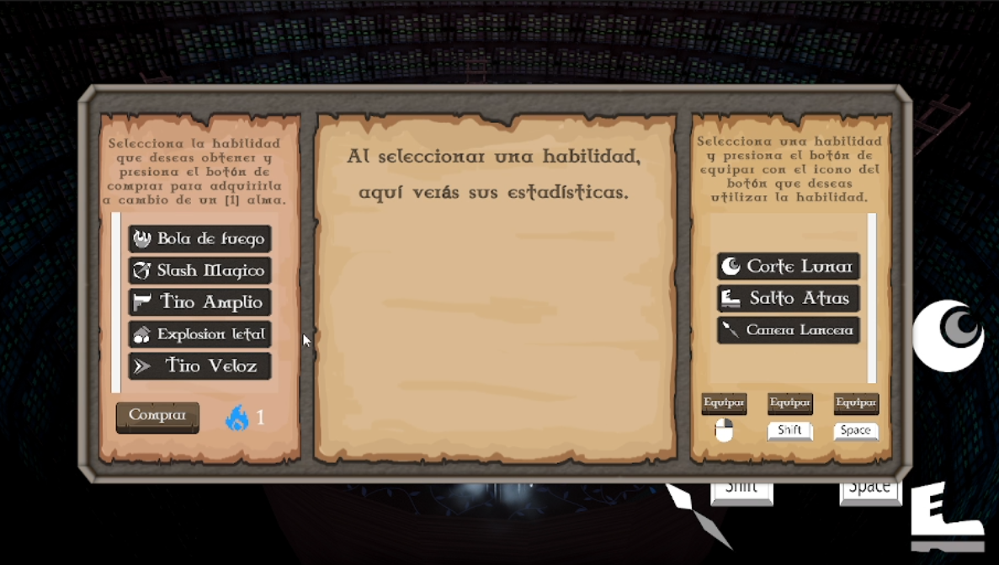
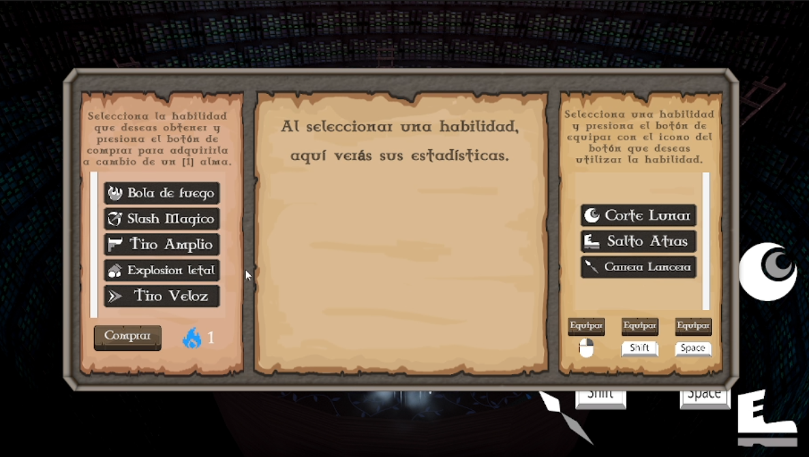

Proyectos
L’agrima The Eternal Sword
Un juego con vista isométrica 3D estilo Diablo/Hades en el cual se pelean contra distintos jefes y se consiguen habilidades nuevas. Uno de los proyectos más completos en 3D.
 


Game Developer
Soy un desarrollador de videojuegos apasionado por el diseño y la programación. Me especializo en juegos 2D y 3D, con experiencia en proyectos personales y profesionales.
Un juego con vista isométrica 3D estilo Diablo/Hades en el cual se pelean contra distintos jefes y se consiguen habilidades nuevas. Uno de los proyectos más completos en 3D.
